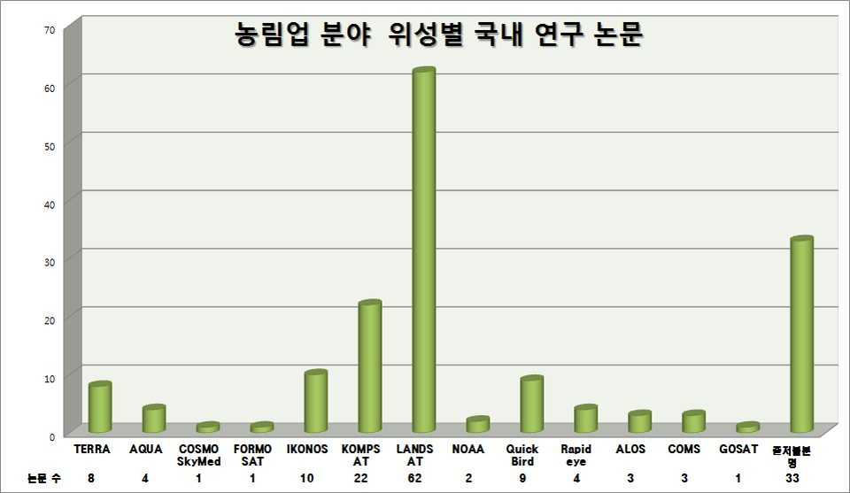

연구실적 · 국내전문학술지
농림업 분야의 위성영상 활용현황
Overview of Current Applications of Satellite Images in Agricultural Sectors

초록
전 세계적으로 인공위성의 수요가 증가됨에 따라 위성영상을 활용한 다양한 분야에서 연구가 진행되고 있다. 본 논문에서는 지구관측 인공위성을 활용한 농림업 분야의 위성영상 활용현황 분석과 농림업 분야에서 활발히 사용 중인 위성의 종류 및 시스템 사항을 분석한다. 위성영상을 활용한 국내 농림업 연구현황을 분석하기 위해 최근 5년간의 국내 논문을 수집하여 통계분석을 진행하고, 이를 통해 농림업 분야에서의 위성영상 활용현황을 분석하고 최근 세계적으로 운용되는 중형급 위성 영상을 활용하여 농림업 분야에 적용될 수 있는 기술을 조사한다. 이러한 분석 자료는 향후 중형급 위성이 구현될 때 위성영상을 활용하는 수요자에게 적합한 사양을 제공할 수 있는 방향으로 사업 계획을 수립할 수 있는 정책적인 참고 자료가 될 것으로 기대된다.
The increasing demands and utilization of the multi-purpose satellites have led to diverse research activities with regards to satellite image processing and applications. In this paper, the research activities of satellite images is investigated relevant to domestic agricultural activities in past 5 years and the system characteristics of the related spaceborne payload is analyzed. For this purpose, a broad range of research materials has been collected published in past years and a statistical analysis is performed to classify the use of satellite images. Overall the current work is aimed to carry out a comprehensive analysis on the current status of satellite imaging in agricultural sectors. Furthermore, this paper can be utilized to identify and support the incoming satellite development plan utilizing medium imaging capabilities specially in the field of agricultural uses.
인용
김현철, 이우경 외 6명, “농림업 분야의 위성영상 활용현황”, 통신위성우주산업연구회논문지, 제9권 2호, 2014년 6월